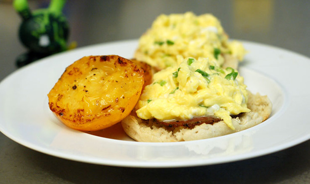

HOME MENU RECEPIES OPENING CONTACT

with some views of the oceans example cafe other the perfect environment to unwind and recharge the batteries
our menu offers a wide range of breakfasts brunches and lunches,including a range of vegetarian options.
Whether you sip on a fresh hot coffee or a cooling smooth you never need to be feel rushed . relax with friends or just watch the world to go by
This weekend our season of special brunches continues with scrambed egg on an english rutn. not for the faint hearted,the secret of these eggs is that they are made with half cream and cooked in butter with no more than 4 eggsint he pan at a time.